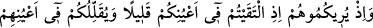
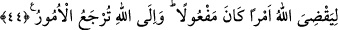

elbette çekinecek ve iş hakkında çekişecektiniz. Fakat Allah (sizi bundan)
kurtardı. Çünkü O, kalblerin özünü bilir.
Nakledilir ki: Hz. Peygamber Bedir savaşı gecesinde rüyasında Kureyş ordusunun son
derece az ve zelîl olduğunu gördü. Dostlar galip, düşmanlar mağlup olacaktır, diye tevil
etti. Bu rüyayı ve tabiri işiten müslümanlar gayet sevindi ve mutlu oldular. Hak
sübhânehu ve teâlâ o nimeti hatırlatarak şöyle buyurur:
Ey Muhammed! Hatırla o zamanı ki, “hani Allah uykunda sana onları” müşrikleri
“az gösterdi.” Mücahid’in şöyle dediği nakledilmiştir: Allah Teâlâ Nebîsi’ne (s.a.v.)
rüyasında Kureyş kâfirlerini az gösterdi. O da bunu ashabına bildirince şöyle dediler:
“Peygamberin rüyası mutlaka doğrudur, müşrikler topluluğu azdır.” Böylece bu rüya
onların kalblerine güç verdi.”
“Eğer onları sana çok gösterseydi, elbette çekinecek” korkacak ve harp saflarında
geride duracaktınız “ve iş” savaş “hakkında çekişecektiniz.” düşman karşısında sebat
etmek ve kaçmak arasında görüş farklılıkları ortaya çıkacaktı.
Haddadî der ki: “
” korkuyla beraber olan güçsüzlük halidir.
“
” (çekişme), iki kişiden her birinin diğerini sahip olduğu görüşten çekip
çıkarmaya çalışmasıdır.
“Fakat Allah” sizi bundan “kurtardı.” çekinme ve çekişmeden kurtulma nimetini
bahşetti. “Çünkü O, kalblerin özünü bilir.” kalblerde meydana gelecek cesareti,
korkuyu, sabrı ve ürpertiyi bilir. Ne yapacaksa da ona göre yapar.
44. Allah yapılması gereken bir işi yerine getirmek için karşılaştığınız zaman
onları sizin gözlerinizde az gösteriyor, sizi de onların gözlerinde azaltıyordu. Bütün
işler dönüp Allah’a varır.
“Allah yapılması gereken bir işi yerine getirmek için” Bu ifade, kendisiyle illetlenen
fiil değiştiği için tekrar edilmiştir. Önceki âyette, zikredilen durumda iki topluluğun bir
araya getirilmesi; bu âyette ise her iki tarafın karşısındakini gözünde az görmesi ifade
edilmiştir.
“karşılaştığınız zaman” Allah Teâlâ “onları sizin gözlerinizde az gösteriyor,” Yâni;
Ey sahabe! Allah Teâlâ’nın düşmanları size göstermesini hatırlayınız.
Müşrikleri, müslümanların gözünde o kadar az göstermiştir ki İbn Mes‘ûd (r.a.)
yanındakine: “Ne dersin, onlar yetmiş kişiler mi?” diye sormuş, o da: “Gördüğüm
kadarıyla yüz kişiler.” diye cevap vermiştir. Bu az gösterme müminlere sebat verip
kalblerine metanet vermek ve Hz. Peygamberin rüyasını doğrulamak içindir. Zira ona